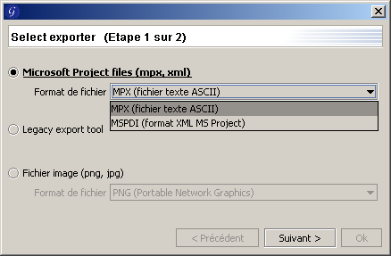

Importation/Exportation
ATTENTION : Les fonctionnalit� d'importation et d'exportation sont actuellement
remani�es. Les informations ci-dessous sont sujettes � changements dans les prochaines versions de
GanttProject.
Importation
GanttProject vous permet d'importer des projets provenant de :
- GanttProject ;
- Microsoft® Office Project.
Vous pouvez �galement importer des listes des t�ches provenant de fichier texte (ASCII).
Importation d'un projet de GanttProject
- cliquez sur le menu Fichier, puis Importer ou cliquez sur le bouton Importer
 ;
;
- choisissez l'importeur GanttProject et validez ;
- s�lectionnez le fichier GanttProject que vous voulez importer ;
- lors de l'importation, vous pouvez choisir d'ajouter les t�ches au projet existant ou de supprimer le
projet existant.
Importation d'un projet de Microsoft® Office Project
- cliquez sur le menu Fichier, puis Importer ou cliquez sur le bouton Importer
;
- choisissez l'importeur Microsoft® Office Project et validez ;
- s�lectionnez le fichier Microsoft® Office Project que vous voulez importer (GanttProject
sait importer les fichiers MPX (Microsoft Project Exchange), MPP (Microsoft Project) et
MSPDI (Microsoft Project Data Interchange) ;
- lors de l'importation, vous pouvez choisir d'ajouter les t�ches au projet existant ou de supprimer le
projet existant.
Importation d'une liste de t�ches provenant d'un fichier texte
Le formalisme des fichiers textes est extr�mement simple : une ligne correspond au nom d'une t�che.
Lors de la lecture du fichier, GanttProject va donc cr�er une t�che par ligne du fichier, le nom de la
t�che cr��e sera exactement celle de la ligne lue.
- cliquez sur le menu Fichier, puis Importer ou cliquez sur le bouton Importer
;
- choisissez l'importeur de fichiers texte et validez ;
- s�lectionnez le fichier texte contenant les noms des t�ches que vous voulez importer ;
- lors de l'importation, vous pouvez choisir d'ajouter les t�ches au projet existant ou de supprimer le
projet existant.
Exportation
GanttProject vous permet d'exporter les projets en diff�rent format :
- PDF (Portable Document Format) ;
- HTML (HyperText Markup Language) ;
- PNG (Portable Network Graphics);
- fichiers Microsoft® Office Project.
N.B. : les exportations sont en train d'�tre pluginis�es, l'acc�s � ces fonctionnalit�s
n'est pas stable, c'est pourquoi certaines sections suivantes sont vides pour l'instant.
Exportation PDF
En cours de modification...
Exportation HTML
En cours de modification...
Exportation PNG
En cours de modification...
Exportation en fichiers Microsoft® Office Project
Cette fonctionnalit� n'est disponible que si la version de GanttProject dont
vous disposez contient le plugin d'exportation et d'importation MS-Project.
- cliquez sur le menu Fichier, puis Exporter ou cliquez sur le bouton Exporter
 ;
;
- la fen�tre de choix d'exportation s'affiche ;
- choisissez le format d'exportation, MPX ou MSPDI et validez;
- choisissez l'endroit o� le fichier sera export� et validez.

N.B.
- le format MPX se lit avec toutes les versions de Microsoft® Project et �crit par toute les versions jusqu'� Microsoft Project 98 ;
- le format MSPDI est le format XML de Microsoft® pour stocker des donn�es de projet. Microsoft® Office Project 2002 et Microsoft® Office Project 2003 peuvent lire et �crire des fichiers MSPDI.